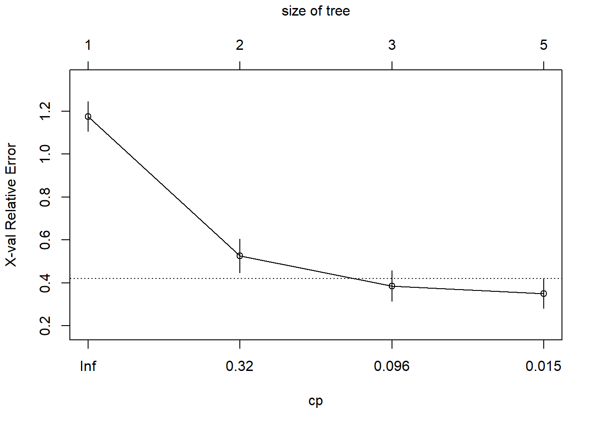

Show the code
pacman::p_load(
tidyverse,
rpart,
rpart.plot,
caret,
visNetwork,
htmlwidgets,
sparkline
)JIN QINHAO
base_dir <- "D:/GitHub/Qinhao/ISSS608-VAA/Take-home-exercise/Take-Home-Exercise2"
data_path <- file.path(base_dir, "data", "tourism_decision_tree_ready.csv")
output_dir <- file.path(base_dir, "outputs")
artifact_export_enabled <- identical(
tolower(Sys.getenv("WRITE_TAKE_HOME_EX2_ARTIFACTS", "false")),
"true"
)
export_note <- function(path_label) {
message(
"Artifact export skipped during render. ",
"Set WRITE_TAKE_HOME_EX2_ARTIFACTS=true to regenerate tracked files under: ",
path_label
)
}
if (artifact_export_enabled) {
dir.create(output_dir, recursive = TRUE, showWarnings = FALSE)
}df <- readr::read_csv(data_path, show_col_types = FALSE) %>%
mutate(
date = as.Date(date),
month = factor(
month,
levels = 1:12,
labels = c("Jan", "Feb", "Mar", "Apr", "May", "Jun",
"Jul", "Aug", "Sep", "Oct", "Nov", "Dec")
),
quarter = factor(quarter),
period = factor(period, levels = c("pre_covid", "covid_shock", "recovery")),
dataset_split = factor(dataset_split, levels = c("train", "test")),
hotel_occ_level_tertile = factor(
hotel_occ_level_tertile,
levels = c("low", "medium", "high")
),
# 为了让树图上的阈值更易读，创建展示型变量
arrivals_million = visitor_arrivals / 1000000,
china_share_pct = china_share * 100,
stay_days = avg_stay_monthly_capped
)
glimpse(df)Rows: 110
Columns: 17
$ date <date> 2016-12-01, 2017-01-01, 2017-02-01, 2017-03-…
$ year <dbl> 2016, 2017, 2017, 2017, 2017, 2017, 2017, 201…
$ month <fct> Dec, Jan, Feb, Mar, Apr, May, Jun, Jul, Aug, …
$ quarter <fct> 4, 1, 1, 1, 2, 2, 2, 3, 3, 3, 4, 4, 4, 1, 1, …
$ period <fct> pre_covid, pre_covid, pre_covid, pre_covid, p…
$ visitor_arrivals <dbl> 1506134, 1480479, 1361010, 1480161, 1470750, …
$ visitor_arrivals_china <dbl> 226020, 316805, 268993, 264711, 252135, 23236…
$ china_share <dbl> 0.1500663, 0.2139882, 0.1976422, 0.1788393, 0…
$ china_share_pct <dbl> 15.00663, 21.39882, 19.76422, 17.88393, 17.14…
$ hotel_occ <dbl> 79.61207, 81.76737, 88.02775, 84.67201, 85.06…
$ avg_stay_monthly <dbl> 3.214346, 3.517353, 3.423516, 3.150551, 3.280…
$ avg_stay_monthly_capped <dbl> 3.214346, 3.517353, 3.423516, 3.150551, 3.280…
$ hotel_occ_level_tertile <fct> medium, medium, high, high, high, medium, med…
$ hotel_occ_level_business <chr> "medium", "medium", "high", "medium", "high",…
$ dataset_split <fct> train, train, train, train, train, train, tra…
$ arrivals_million <dbl> 1.506134, 1.480479, 1.361010, 1.480161, 1.470…
$ stay_days <dbl> 3.214346, 3.517353, 3.423516, 3.150551, 3.280…Target variable: Hotel occupancy rate level (low / medium / high)
Independent variables: # arrivals_million = Total inbound tourists (in millions)
china_share_pct = Proportion of Chinese tourists (percentage)
stay_days = Truncated average length of stay
month = Month (seasonality)
Classification tree:
rpart::rpart(formula = hotel_occ_level_tertile ~ arrivals_million +
china_share_pct + stay_days + month, data = train_df, method = "class",
parms = list(split = "gini"), control = rpart::rpart.control(cp = 0.005,
maxdepth = 4, minsplit = 10, minbucket = 5, xval = 10))
Variables actually used in tree construction:
[1] arrivals_million month
Root node error: 57/88 = 0.64773
n= 88
CP nsplit rel error xerror xstd
1 0.49123 0 1.00000 1.17544 0.070151
2 0.21053 1 0.50877 0.52632 0.078011
3 0.04386 2 0.29825 0.38596 0.071263
4 0.00500 4 0.21053 0.35088 0.068969
Best cp: 0.005 n= 88
node), split, n, loss, yval, (yprob)
* denotes terminal node
1) root 88 57 low (0.35227273 0.29545455 0.35227273)
2) arrivals_million< 0.7575905 31 3 low (0.90322581 0.09677419 0.00000000) *
3) arrivals_million>=0.7575905 57 26 high (0.05263158 0.40350877 0.54385965)
6) month=Jan,May,Dec 16 3 medium (0.12500000 0.81250000 0.06250000) *
7) month=Feb,Mar,Apr,Jun,Jul,Aug,Sep,Oct,Nov 41 11 high (0.02439024 0.24390244 0.73170732)
14) arrivals_million< 1.466122 22 11 high (0.04545455 0.45454545 0.50000000)
28) month=Mar,Apr,Jun 5 0 medium (0.00000000 1.00000000 0.00000000) *
29) month=Feb,Jul,Aug,Sep,Oct,Nov 17 6 high (0.05882353 0.29411765 0.64705882) *
15) arrivals_million>=1.466122 19 0 high (0.00000000 0.00000000 1.00000000) *tree_vis <- visNetwork::visTree(
pruned_tree,
data = as.data.frame(train_df),
main = "Decision Tree for Hotel Occupancy Level",
submain = "Target: low / medium / high",
width = "100%",
height = "700px",
nodesFontSize = 16,
edgesFontSize = 14,
fallenLeaves = TRUE,
legend = TRUE,
nodesPopSize = TRUE,
minNodeSize = 14,
maxNodeSize = 32,
highlightNearest = list(enabled = TRUE, hover = TRUE),
export = TRUE
)
tree_visif (artifact_export_enabled) {
png(
filename = file.path(output_dir, "decision_tree_static.png"),
width = 1800,
height = 1200,
res = 180
)
rpart.plot::rpart.plot(
pruned_tree,
type = 2,
extra = 104,
under = TRUE,
fallen.leaves = TRUE,
faclen = 0,
tweak = 1.15,
main = "Decision Tree for Hotel Occupancy Level"
)
dev.off()
} else {
export_note(output_dir)
}pred_class <- predict(pruned_tree, newdata = test_df, type = "class")
pred_prob <- predict(pruned_tree, newdata = test_df, type = "prob") %>%
as.data.frame()
# 统一 levels，避免 confusionMatrix 报错
pred_class <- factor(pred_class, levels = c("low", "medium", "high"))
test_df$hotel_occ_level_tertile <- factor(
test_df$hotel_occ_level_tertile,
levels = c("low", "medium", "high")
)Confusion Matrix and Statistics
Reference
Prediction low medium high
low 0 0 0
medium 6 5 0
high 0 5 6
Overall Statistics
Accuracy : 0.5
95% CI : (0.2822, 0.7178)
No Information Rate : 0.4545
P-Value [Acc > NIR] : 0.4131
Kappa : 0.2143
Mcnemar's Test P-Value : NA
Statistics by Class:
Class: low Class: medium Class: high
Sensitivity 0.0000 0.5000 1.0000
Specificity 1.0000 0.5000 0.6875
Pos Pred Value NaN 0.4545 0.5455
Neg Pred Value 0.7273 0.5455 1.0000
Prevalence 0.2727 0.4545 0.2727
Detection Rate 0.0000 0.2273 0.2727
Detection Prevalence 0.0000 0.5000 0.5000
Balanced Accuracy 0.5000 0.5000 0.8438# A tibble: 2 × 2
metric value
<chr> <dbl>
1 accuracy 0.5
2 kappa 0.214# A tibble: 4 × 2
variable importance
<chr> <dbl>
1 arrivals_million 27.0
2 stay_days 23.4
3 month 14.3
4 china_share_pct 12.6prediction_tbl <- bind_cols(
test_df %>% select(date, hotel_occ, hotel_occ_level_tertile),
tibble(predicted_class = pred_class),
pred_prob
)
if (artifact_export_enabled) {
write.csv(
as.data.frame(cm$table),
file.path(output_dir, "decision_tree_confusion_matrix.csv"),
row.names = FALSE
)
write.csv(
metrics_tbl,
file.path(output_dir, "decision_tree_metrics.csv"),
row.names = FALSE
)
write.csv(
importance_tbl,
file.path(output_dir, "decision_tree_variable_importance.csv"),
row.names = FALSE
)
write.csv(
prediction_tbl,
file.path(output_dir, "decision_tree_test_predictions.csv"),
row.names = FALSE
)
cat("Decision tree analysis complete.\n")
cat("Outputs saved to:", output_dir, "\n")
} else {
cat("Decision tree analysis complete.\n")
export_note(output_dir)
}Decision tree analysis complete.---
title: "Visualization of classification trees "
author: "JIN QINHAO"
format:
html:
toc: true
toc-depth: 3
code-fold: true
code-tools: true
code-summary: "Show the code"
page-layout: full
execute:
warning: false
message: false
---
# **Visualization of classification trees**
# 1Classification tree analysis
## 1.1Install and launch the required R packages
```{r}
pacman::p_load(
tidyverse,
rpart,
rpart.plot,
caret,
visNetwork,
htmlwidgets,
sparkline
)
```
```{r}
base_dir <- "D:/GitHub/Qinhao/ISSS608-VAA/Take-home-exercise/Take-Home-Exercise2"
data_path <- file.path(base_dir, "data", "tourism_decision_tree_ready.csv")
output_dir <- file.path(base_dir, "outputs")
artifact_export_enabled <- identical(
tolower(Sys.getenv("WRITE_TAKE_HOME_EX2_ARTIFACTS", "false")),
"true"
)
export_note <- function(path_label) {
message(
"Artifact export skipped during render. ",
"Set WRITE_TAKE_HOME_EX2_ARTIFACTS=true to regenerate tracked files under: ",
path_label
)
}
if (artifact_export_enabled) {
dir.create(output_dir, recursive = TRUE, showWarnings = FALSE)
}
```
## 1.2Reading data
```{r}
df <- readr::read_csv(data_path, show_col_types = FALSE) %>%
mutate(
date = as.Date(date),
month = factor(
month,
levels = 1:12,
labels = c("Jan", "Feb", "Mar", "Apr", "May", "Jun",
"Jul", "Aug", "Sep", "Oct", "Nov", "Dec")
),
quarter = factor(quarter),
period = factor(period, levels = c("pre_covid", "covid_shock", "recovery")),
dataset_split = factor(dataset_split, levels = c("train", "test")),
hotel_occ_level_tertile = factor(
hotel_occ_level_tertile,
levels = c("low", "medium", "high")
),
# 为了让树图上的阈值更易读，创建展示型变量
arrivals_million = visitor_arrivals / 1000000,
china_share_pct = china_share * 100,
stay_days = avg_stay_monthly_capped
)
glimpse(df)
```
## 1.3Split the dataset into training and testing sets
```{r}
train_df <- df %>% filter(dataset_split == "train")
test_df <- df %>% filter(dataset_split == "test")
cat("Train rows:", nrow(train_df), "\n")
cat("Test rows:", nrow(test_df), "\n")
```
## 1.4Build classification tree
Target variable: Hotel occupancy rate level (low / medium / high)
Independent variables: \# arrivals_million = Total inbound tourists (in millions)
china_share_pct = Proportion of Chinese tourists (percentage)
stay_days = Truncated average length of stay
month = Month (seasonality)
```{r}
fit_tree <- rpart::rpart(
hotel_occ_level_tertile ~ arrivals_million + china_share_pct + stay_days + month,
data = train_df,
method = "class",
parms = list(split = "gini"),
control = rpart::rpart.control(
cp = 0.005,
maxdepth = 4,
minsplit = 10,
minbucket = 5,
xval = 10
)
)
```
## 1.5Check the complexity parameter table.
```{r}
printcp(fit_tree)
plotcp(fit_tree)
```
## 1.6Prune the tree
```{r}
bestcp <- fit_tree$cptable[which.min(fit_tree$cptable[, "xerror"]), "CP"]
pruned_tree <- prune(fit_tree, cp = bestcp)
cat("Best cp:", bestcp, "\n")
print(pruned_tree)
```
## 1.7Interactive tree visualization
```{r}
tree_vis <- visNetwork::visTree(
pruned_tree,
data = as.data.frame(train_df),
main = "Decision Tree for Hotel Occupancy Level",
submain = "Target: low / medium / high",
width = "100%",
height = "700px",
nodesFontSize = 16,
edgesFontSize = 14,
fallenLeaves = TRUE,
legend = TRUE,
nodesPopSize = TRUE,
minNodeSize = 14,
maxNodeSize = 32,
highlightNearest = list(enabled = TRUE, hover = TRUE),
export = TRUE
)
tree_vis
```
```{r}
if (artifact_export_enabled) {
htmlwidgets::saveWidget(
tree_vis,
file.path(output_dir, "decision_tree_visual.html"),
selfcontained = FALSE
)
} else {
export_note(output_dir)
}
```
## 1.8Static tree visualization for report
```{r}
if (artifact_export_enabled) {
png(
filename = file.path(output_dir, "decision_tree_static.png"),
width = 1800,
height = 1200,
res = 180
)
rpart.plot::rpart.plot(
pruned_tree,
type = 2,
extra = 104,
under = TRUE,
fallen.leaves = TRUE,
faclen = 0,
tweak = 1.15,
main = "Decision Tree for Hotel Occupancy Level"
)
dev.off()
} else {
export_note(output_dir)
}
```
## 1.9Predict on test set
```{r}
pred_class <- predict(pruned_tree, newdata = test_df, type = "class")
pred_prob <- predict(pruned_tree, newdata = test_df, type = "prob") %>%
as.data.frame()
# 统一 levels，避免 confusionMatrix 报错
pred_class <- factor(pred_class, levels = c("low", "medium", "high"))
test_df$hotel_occ_level_tertile <- factor(
test_df$hotel_occ_level_tertile,
levels = c("low", "medium", "high")
)
```
## 1.10Evaluate model performance
```{r}
cm <- caret::confusionMatrix(
data = pred_class,
reference = test_df$hotel_occ_level_tertile
)
print(cm)
metrics_tbl <- tibble(
metric = c("accuracy", "kappa"),
value = c(cm$overall[["Accuracy"]], cm$overall[["Kappa"]])
)
print(metrics_tbl)
```
## 1.11Variable importance
```{r}
importance_tbl <- tibble(
variable = names(pruned_tree$variable.importance),
importance = as.numeric(pruned_tree$variable.importance)
) %>%
arrange(desc(importance))
print(importance_tbl)
```
## 1.12Export results
```{r}
prediction_tbl <- bind_cols(
test_df %>% select(date, hotel_occ, hotel_occ_level_tertile),
tibble(predicted_class = pred_class),
pred_prob
)
if (artifact_export_enabled) {
write.csv(
as.data.frame(cm$table),
file.path(output_dir, "decision_tree_confusion_matrix.csv"),
row.names = FALSE
)
write.csv(
metrics_tbl,
file.path(output_dir, "decision_tree_metrics.csv"),
row.names = FALSE
)
write.csv(
importance_tbl,
file.path(output_dir, "decision_tree_variable_importance.csv"),
row.names = FALSE
)
write.csv(
prediction_tbl,
file.path(output_dir, "decision_tree_test_predictions.csv"),
row.names = FALSE
)
cat("Decision tree analysis complete.\n")
cat("Outputs saved to:", output_dir, "\n")
} else {
cat("Decision tree analysis complete.\n")
export_note(output_dir)
}
```